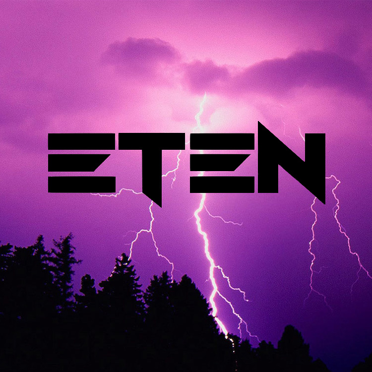
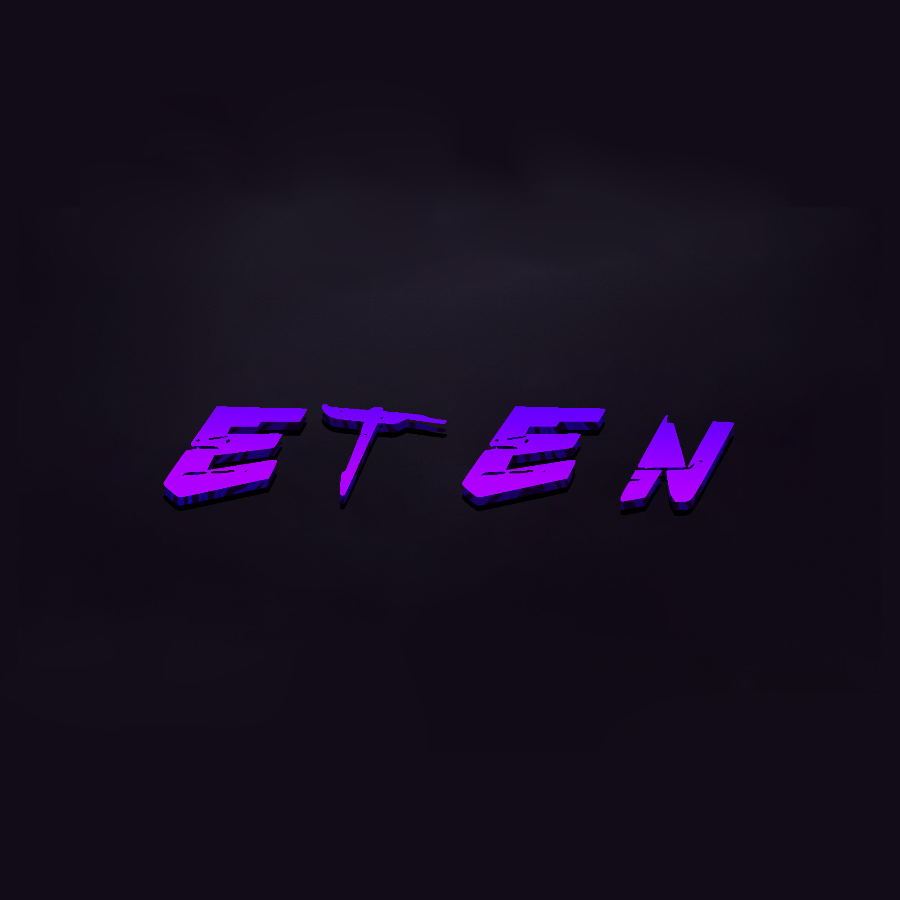

ChSW Names
- ChSW(~20.03.18) - приставка, обозначающая принадлежность той, или иной, вещи к ChSW Universe;
- ChSW land(~20.03.18) - название серверов майнкрафт;
- ChSW Zone(06.11.20) - сервер дискорд, который сейчас является архивом;
- ChSW Coin(29.07.21) - виртуальная валюта, работающая через дискорд бота;
- ChSW Universe(30.07.21) - название вселенной;
- ChSW Period(30.07.21) - условные периоды, которые делят всю хронологию вселенной. Периоды зависят от сезона ChSW land;
- ChSW Pedia(30.07.21) - аналог википедии;
- ChSW Old(30.07.21) - самые первые участники в ChSW Universe;
- ChSW Bot(19.08.21) - дискорд бот, на данный момент не активен;
- ChSW Tube(30.08.21) - официальный ютуб канал вселенной;
- ChSW Sites(12.09.21) - совокупное название для сайтов по тематике ChSW Universe;
- ChSW Company(21.09.21) - название компании;
- ChSW Names(21.09.21) - список названий внутри ChSW Universe;
- ChSW Board(21.09.21) - визуальное представление владений и взаемодействий ChSW Company с другими компаниями;
- ChSWшники(03.10.21) - не каноничный сериал, основанный на героях из ChSW Universe;
- ChSW TikTok(21.10.21) - тикток, в котором выходят урезанные версии видосов с ChSW Tube;
- ChSW Вестник(03.01.22) - название, принадлежащее новостному вестнику на ChSW land`е 4.0. Данное название, на данный момент, не испльзуется;
- ChSW NFT(05.03.22) - название NFT меток.
EtEn Company - это ...
Зачатье
Все начиналось примерно в 2017 году когда основатель компании EtEn был под ником Ukrainian_Bear(в данный момент он считается персонажем). В то время или годами ранее был создан Twitch, YouTube, Instagram и Discord с названием UKBR. Нарисовано полноценное лого.
Картинка(Лого UKBR)

Это были первые корни компании. Лого красовалось на некотрых серверах в том числе на одном из 1.??? ChSWLand'ов. Таким образом это прожило до начала 2020 года где началась новая эпоха.
Картинка(Cкрин с небоскреба с логотипом)
Начало
Создание EtEn можно считать 23 января 2020 года. Чуть ранее была задумка сделать свою киберспорт команду. Проблема была только в названии и именно 23 января было придумано название Enernal Enemies(Вечные Враги). Назвние слишком длинное поэтому было принято решение укоротить его. Тут название поделилось на два варианта это EtEn и E10(e ten). Если вы наблюдательны то можно понять что было выбрано EtEn. Далее было сделана первая аватарка а так-же собран состав из 5 человек с которыми мы играли в игру cs:go. А так-же компания полностью поглотила все соц.сети UKBR.
Картинка(Первый логотип EtEn)

Первые изменения
Далее с начала лета 2020 года следовали времена когда EtEn cтала не только киберспортивной командой, но занимала другие ниши. Начали развиваться некоторые социальные сети, а именно такие как Instagram и TikTok. Но ещё тогда хотелось большество людей набрать в Discord, для пополнение команды и совместной тренировки. Плюс был сделан так сказать новый логотип.
Картинка(Второй логотип EtEn)
Вторая эпоха развития
Это эпоха развивается в приделах 2021 года. EtEn можно назвать уже целой компанией. Продолжали развиться социальные сети и зарегистрированы новые. Так-же создан новый логотип. Больше всего как и задумывалось развит дискорд. Ещё летом были разработаны два личных бота в дискорде. Так же один созданный для интернет валюты, где EtEn занималась техно частью. Открыт PT канал и сделаны стикеры в Telegram'е. Одно из больших событий там это покупка другого сервера ChSW Zone. А далее были разработаны сайт EtEnSites, EtEnPedia и Timer.
Картинка(Третий логотип EtEn)
Время сейчас
В данное время формируется третья эпоха, её начало можно считать с концом 2021 и началом 2022 годами. Discord потихоньку зарастает мхом. Были утерены крупные аккаунты в TikTok, но это не остановило развитие. В данный момент мы создали новые но с другой тематикой. За это время из EtEn и ChSW родилась новая компания Doco. Это союзная компания где все проекты делаются вместе. Например Сodeland и DocoWrite(соц. сеть). Еще очень важным моментом в развитии является разработка новый сайтов такие как Code, EtEnWrite, Merch и EtEnSchol. А также все старые сайты были переработаны под один единственный стиль. Так же были заняты новые ниши и придуманы новые идея, узнать больше можно на EtEnBoard.
Картинка()